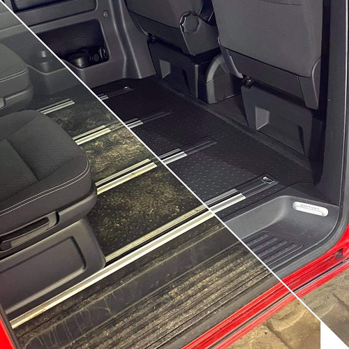
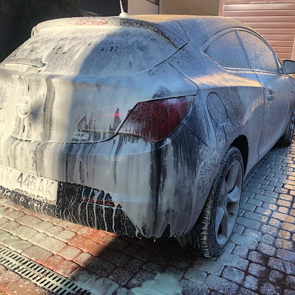

Oferta
Ochrona lakieru
Ochrona lakieru
Jeśli chcemy aby nasz samochód zawsze się błyszczał i lakier szybko
się nie niszczył, warto jest nałożyć powłokę ceramiczną na lakier samochodu. Zadaniem
powłoki
jest ochrona lakieru przed niekorzystnymi warunkami atmosferycznymi, przed promieniami
słonecznymi, a także drobnymi zarysowaniami. Po aplikacji powłoki lakier
nabiera głębi oraz blasku. Możemy też wybrać budżetową alternatywe jaką jest wosk. Wosk
sprawia że karoseria chroniona jest przed czynnikami atmosferycznymi, a także pogłębia
naturalny kolor, ale jest dużo mniej trwalszy niż ceramika.
Odporność na mikrorysy
Auto nabiera połysku i głębi
Ochrona przed promieniami UV
Efekt hydrofobizacji
×
Korekta lakieru

Korekta lakieru
Jest to jeden z najbardziej efektownych zabiegów detailingowych.
Lakier z biegiem czasu traci swój blask , natomiast każdy defekt powłoki lakierniczej da
się
naprawić. Podczas procesu korekty lakieru usuwamy rysy i zmatowienia.
Samochód przechodzi przez wiele zabiegów , które przywrócą jego dawny blask. Dzięki
renowacji wartość twojego auta wzrasta! Umów się na wizytę, obejrzymy i zaproponujemy
odpowiednie rozwiązania dla twojego samochodu.
Usunięcie rys i zmatowień lakieru
Przywrócenie autu pierwotnego
połysku
Wzrost wartości pojazdu
×
Obklejanie
Obklejanie
Oklejanie samochodu to propozycja dla wszystkich, którzy chcą, aby
ich pojazd wyróżniał się na drodze. Obok funkcji estetycznej oklejenie pojazdu pełni też
rolę ochrony oryginalnego lakieru przed czynnikami zewnętrznymi takimi jak błoto,
kamienie, sól i promienie UV. Kryje również niektóre niedoskonałości lakieru.Na rynku
dostępnych jest wiele wariantów folii, dzięki czemu możesz wybierać pomiędzy
niespotykanymi motywami, fakturami i wzorami lub zdecydować się na jednolity kolor.
Krycie niedoskonałości lakieru
Odbija promienie UV
Nowy wygląd pojazdu
×
Detailing wnętrza
Detailing wnętrza
Wnętrze samochodu wymaga odpowiedniej pielęgnacji. Dzięki
zastosowaniu właściwych środków, akcesoriów, oraz technik czyszczenia i konserwacji,
wnętrze samochodu nie tylko może odzyskać dawny blask, ale także może przetrwać kolejne
lata w świetnej kondycji i nadal służyć właścicielowi, zachowując piękny wygląd.
Detailing wnętrza to bardzo mocno rozszerzona wersja posprzątania auta. Obejmuje
wszystkie elementy wnętrza i precyzyjne czyszczenie każdego z nich
Czyste wnętrze
Świeży zapach

×
Car Wash

Car Wash
Wieloetapowy proces mający na celu całkowite, a jednocześnie
bezpieczne usunięcie wszelkich zanieczyszczeń z powierzchni karoserii. Zabieg wykonuje
się w celu pielęgnacji lakieru i poprawy wyglądu auta. Proces ten jest również
wykonywany przed każdą korektą lakieru. Nie wystarczy użyć mocnej chemii samochodowej,
jak w przypadku mycia naczep czy pojazdów rolniczych. Mycie detailingowe ma za zadanie
zminimalizować ryzyko zarysowania lakieru, które np. na myjni szczotkowej jest bardzo
duże
Oczyszcza trundy do usunięcia brud
Poprawa wyglądu samochodu

×
Pranie
tapicerki
Pranie tapicerki
Niezależnie od rodzaju materiału tapicerka samochodowa szybko się
brudzi i zmienia kolor. Nawet jeśli kierowca regularnie odkurza wnętrze, kurz szybko
wnika we włókna foteli oraz zanieczyszcza kokpit. Brud w odsłoniętych miejscach
dodatkowo jest utrwalany przez wysoką temperaturę, do której wnętrze nagrzewa się
podczas postoju na słońcu. Kurz i piasek dają o sobie znać także po uchyleniu szyby w
deszczowy dzień. Nawet szybko wytarte krople wody zostawiają na plastikach i materiałach
plamy oraz smugi, których nie da się pozbyć wyłącznie przy pomocy odkurzacza
Dłuższa żywotność materiału
Podnosi estetyke wizualną samochodu
×